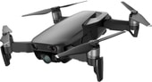
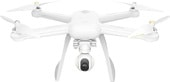
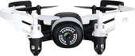
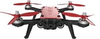
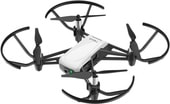
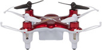

Рискованно пилотировать воздушный транспорт, но просто и интересно контролировать движение радиоуправляемого устройства. Беспилотные летательные аппараты используют в развлекательных целях, аэро видеосъемки удаленных объектов и даже для сбора информации о состоянии воздушной среды. Отдельное направление — приборы для развлечений: игр, фотографирования, участия в спортивных соревнованиях. Предложений купить квадрокоптер в Минске много, главное — выбрать хорошую модель и надежного продавца.
|  |
DJI Mavic Air (черный)Самый маленький дрон с 3-осевым стабилизатором для камеры. Амортизаторы подвеса нейтрализуют вибрации, помогая получать четкие снимки. Mavic Air снимает невероятные UHD-видео в 4К со скоростью 30 кадров/с при 100 Мбит/с. Mavic Air поддерживает запись видео с эффектом замедленного действия, идеальный способ запечатлеть ваши спортивные приключения (1080p при 120 кадрах/с). Дрон обладает встроенной памятью размером 8 Гбайт - фото и видео можно сохранять прямо на летательный аппарат и скачивать через разъем USB. Производитель DJI
|
Цена:от 1590,00 руб. |
|  |
Xiaomi Mi Drone 4KДаже новичок может легко управлять Xiaomi Mi Drone и выполнять очень сложные маневры при помощи пульта управления, на котором имеются специальная кнопка для взлета и посадки. Также квадракоптер может автоматически следовать проложенному пользователем маршруту, кружить вокруг объекта съемки и самостоятельно возвращаться обратно, что позволяет фокусироваться на выбранной композиции и снимать пейзажи невиданной красоты. Владелец устройства может сделать его своими глазами и вести съемку, не выходя из дома. Производитель Xiaomi
|
Цена:от 1290,00 руб. |
|  |
JXD 512DW (черный/белый)Квадрокоптер JXD 512DW – модель миниатюрных размеров (90х90 мм), оснащённая HD камерой с трансляцией видео на смартфон в режиме реального времени, имеет встроенный барометр и поддерживает функцию автоматического удержания высоты, имеет режим блокировки курса (безголовый режим) и делает сальто на 360 по нажатию на одну кнопку. Квадрокоптер JXD 512DW — дальнейшая эволюция бестселлера от JXD – 512W. По сравнению с предшественником, модель получила принципиально важную функцию автоматического удержания высоты, используя для этого встроенный барометр. Во-первых, это облегает управление коптером. Пилот может отпустить стик газа и модель будет удерживаться на текущей высоте сама. Во-вторых, функция существенно помогает для получения стабильной фото или видео картинки. Производитель JXD
|
Цена:от 83,33 руб. |
|  |
MJX Bugs 8 ProГоночный квадрокоптер с камерой и FPV шлемом, максимальная дальность 500 м, время полета 12-15 мин. Квадрокоптер MJX Bugs 8 Pro Sport является представителем гоночных мультикоптеров 250 класа и улучшеным более мощным продолжением модели MJX Bugs 8. Обновленная модель стала ярче, хотя дизайн MJX Bugs 8 pro Sport не сильно изменился, в сравнении со стандартной моделью MJX Bugs 8, цвет верхней крышки и новых более эффективных трехлопастных пропеллеров теперь красные. Производитель MJX
|
Цена:от 289,00 руб. |
|  |
Ryze Tech TelloМаленький дрон с возможностью программирования, оснащенный процессором Intel и камерой EZ Shots. Развлекайся, учись и занимайся творчеством. Учитесь и занимайтесь творчеством Игра является важной частью обучения, поэтому Tello можно программировать на Scratch. Эта развиваемая MIT система программирования поможет детям и подросткам познакомиться с основами программирования и получить удовольствие от этого опыта. А если вы уже продвинутый пользователь, то можете сами заниматься созданием приложений для Tello с помощью сервиса Tello SDK. Производитель Ryze
|
Цена:от 259,00 руб. |
|  |
Syma X12S NanoБлагодаря специальной конструкции, может летать в помещении и на открытом воздухе при не сильном ветре. 4 канала управления дают возможность управлять квадрокоптером во всех направлениях: вверх/вниз, вперед/назад, влево/вправо, вращение. Кроме обычных летающих движений, Syma X5C способен выполнять переворот на 360. Производитель Syma
|
Цена:от 50,83 руб. |
| Название | Емкость аккумулятора | Вес | Время работы |
|---|---|---|---|
| DJI Mavic Air | 2 970 мА·ч | 430 г | 15 — 21 мин |
| Xiaomi Mi Drone 4K | 5 100 мА·ч | 670 г | 25 — 27 мин |
| JXD 512DW | 2 100 мА·ч | 470 г | 7-10 мин |
| MJX Bugs 8 Pro | 1 300 мА·ч | 420 г | 7-10 мин |
| Ryze Tech Tello | 1 100 мА·ч | 80 г | 11 — 13 мин |
| Syma X12S Nano | 100 мА·ч | 180 г | 3 — 7 мин |